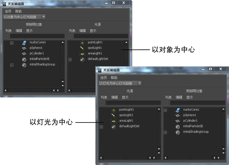

选择灯光链接选项将在“以灯光为中心”(Light-Centric)或“以对象为中心”(Object-Centric)模式下打开“关系编辑器”(Relationship Editor)。
注： 将单个对象链接到单个灯光是灯光链接的首选方法。

创建灯光集
- 在“关系编辑器”(Relationship Editor)中，选择“以灯光为中心灯光链接”(Light Centric Light Linking)。
- 在左侧面板（“光源”(Light Sources)）中，选择要包含在新集中的灯光，并选择。
Maya 将新灯光集添加到灯光列表的底部。
创建对象集
- 在“关系编辑器”(Relationship Editor)中，选择“以对象为中心灯光链接”(Object Centric Light Linking)。
- 在左侧面板（“受照明对象”(Illuminated Objects)）中，选择要包含在新集中的对象，并选择。
Maya 将新对象集添加到对象列表的底部。
从集中添加或移除对象或灯光
- 在“关系编辑器”(Relationship Editor)中，选择“下拉菜单中的集编辑”(Set Editing from the drop-down menu)。
- 在左侧面板中（集）中，选择集。
集中的对象（或灯光）将在右侧面板中亮显。
- 在右侧面板（对象）中，选择要添加到集的对象（或灯光）并清除要从集中移除的对象（或灯光）的选择。
从命令行链接灯光和曲面
从 Maya 命令行中，键入：
lightlink -light <lightName> -object <surfaceName>
例如，若要链接 spotLight1 和 nurbsSphere1，请键入:
lightlink -light spotLight1 -object nurbsSphere1
重要： 在 Maya 提示或批处理模式下，不会发生将若干 lightlinker 节点的数据合并为一个的常规清理过程。当导入或参考场景时，这可能导致若干 lightlinker 节点。若要防止该行为的发生，请在交互式会话期间导入或参考场景数据。如果必须使用提示或批处理模式，请确保调用 lightlink -q 命令以首先强制包含合并例程的模块的加载。